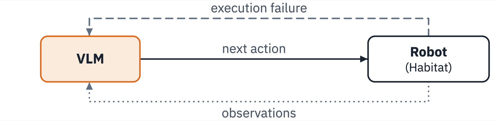
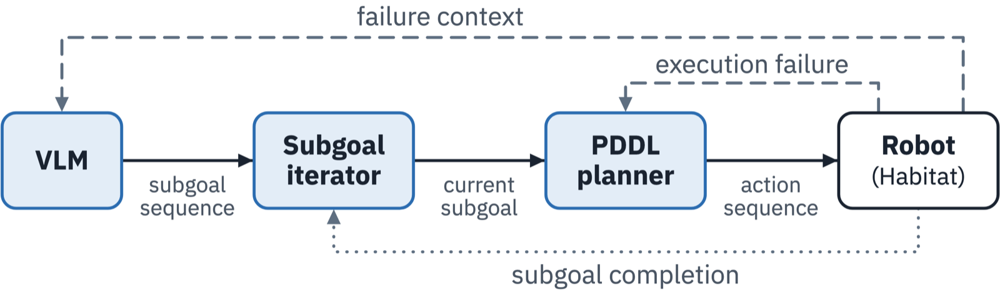
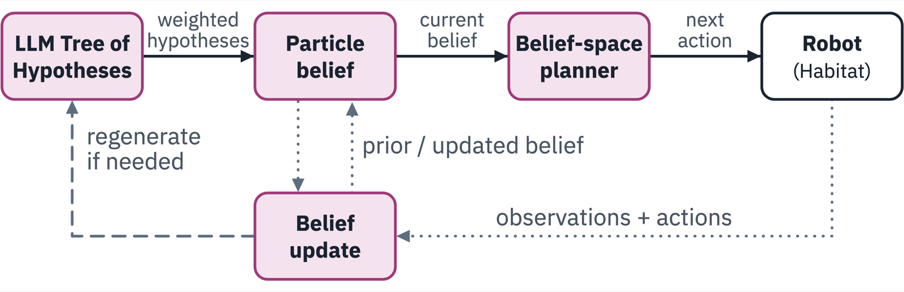
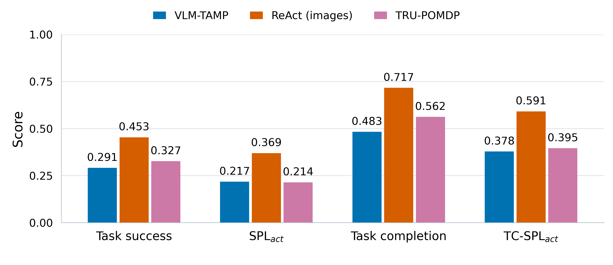
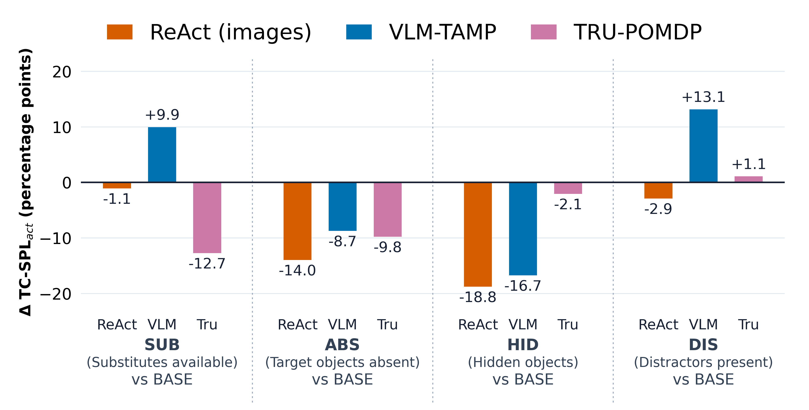

Household robots must successfully navigate imperfect circumstances, both in their internal models and the external world. We introduce a benchmark of seven long-horizon household tasks in Habitat that vary initial robot memory and environment configurations. We evaluate adaptations of ReAct, VLM-TAMP, and Tru-POMDP within a shared execution framework across 90 task–environment–memory combinations, totaling 1,350 episodes. Our evaluation measures task success, partial completion, and action efficiency, along with rule-based analysis of execution traces. ReAct achieves the highest overall task success (45.3%) and completion (71.7%), while having accurate initial memory does not consistently yield the highest performance for every planner. We identify recurring placement errors, precondition errors, and redundant actions through trace analysis. These findings highlight differences in how the evaluated planners use initial knowledge and respond to uncertainty.
Seven long-horizon household tasks in Habitat Sim[1–3], executed with PARTNR's[4] shared high-level robot skills. Each task spans multiple rooms and furniture, involving object transport, spatial placement, and object-state changes.
Each episode pairs one environment configuration (what is actually true in the world) with one initial memory condition (what the robot believes at the start), giving up to 15 variants per task. Below is the full grid for T1.
| World →Memory ↓ | BASEJug on counter | SUBOnly a pitcher | ABSNo container | HIDJug in fridge | DISJug + vase, spray bottle |
|---|---|---|---|---|---|
| Accurate | BaselineJug on counter | Pitcher available | Nothing available | Jug in fridge | Jug + distractors |
| Incomplete | No jug info | No pitcher info | Can’t tell | No jug info | No jug info |
| Outdated | Jug on dining table | Jug on dining table | Jug on dining table | Jug on dining table | Jug on dining table |
Outlined: the HID × Outdated example, where the jug is in the fridge but the robot remembers it on the dining table. In ABS, criteria needing the unavailable object are excluded.
Completion Ci is the fraction of evaluation criteria satisfied; success Si = 1 only if all are satisfied.
Adapts SPL[5] to count skill attempts instead of path length, relative to a human reference: Si · Airef / max(Ai, Airef).
Replaces binary success with completion Ci, rewarding partial progress while penalizing extra skill attempts. 1 = as efficient as a human.
All three approaches are re-implemented on Habitat with PARTNR's skills and share the same inputs: memory, goal, scene graph, images (except Tru-POMDP), and the same 12 high-level robot skills. Every planner uses GPT-5.6 Luna with high reasoning effort.
A VLM picks every next skill
Extends PARTNR-Planner’s[4] zero-shot ReAct with visual observations. At each step a VLM reasons over the instruction, world graph, images, and action history, then selects the next skill; execution feedback informs the next decision.

VLM subgoals, refined by a PDDL planner
A VLM proposes intermediate subgoals as grounded predicates; a symbolic planner with a hand-crafted PDDL[8] domain turns each into a skill sequence. Failures trigger symbolic replanning or subgoal revision.

Belief-space search over LLM hypotheses
An LLM Tree of Hypotheses builds a weighted particle belief over goals and unobserved object locations; a DESPOT-style search picks actions, and the belief updates after each one.


| Method | Accurate | Incomplete | Outdated |
|---|---|---|---|
| ReAct | 0.71 | 0.55 | 0.52 |
| VLM-TAMP | 0.37 | 0.39 | 0.43 |
| Tru-POMDP | 0.39 | 0.32 | 0.47 |
Only ReAct benefits clearly from accurate memory. VLM-TAMP and Tru-POMDP score best with outdated memory. One possible explanation is that memory–observation discrepancies trigger extra exploration or replanning that surfaces useful information, though the aggregate results do not establish this.

Rule-based analysis of execution traces, following prior embodied-agent error analyses[10, 11]. Categories overlap, so rates need not sum to 100%. Darker cells are more frequent; bold marks the highest in each row. Hover a finding for its definition.
| Finding | ReActn=246 | VLM-TAMPn=306 | Tru-POMDPn=303 |
|---|---|---|---|
| Object not placed | 23.6 | 51.3 | 45.2 |
| Missing action | 37.4 | 48.0 | 36.3 |
| Placement error | 53.7 | 39.5 | 16.5 |
| Object not found | 19.9 | 33.0 | 18.5 |
| Insufficient planning | 1.6 | 14.7 | 17.5 |
| No hypotheses | 0.0 | 0.0 | 26.4 |
| Wrong object | 1.6 | 3.6 | 5.3 |
| Wrong order | 5.3 | 0.0 | 0.0 |
| Failure to stop | 3.7 | 0.0 | 0.7 |
| Finding | ReActn=450 | VLM-TAMPn=450 | Tru-POMDPn=450 |
|---|---|---|---|
| Unnecessary actions | 26.2 | 18.4 | 52.4 |
| Precondition error | 46.0 | 13.8 | 23.1 |
| Repeated actions | 2.4 | 30.2 | 41.1 |
| Failure to stop | 2.4 | 0.0 | 3.6 |
| Hallucinated object | 0.2 | 0.0 | 0.0 |
Highest task performance, but vulnerable to incorrect placements, precondition violations, and unproductive exploration when objects are unavailable.
Fewer precondition errors, but can terminate after completing its generated subgoals without satisfying the full task.
Explicitly represents uncertainty, but frequently takes unnecessary and repeated actions.
Robust long-horizon planning requires more than reactive replanning, symbolic feasibility checking, or explicit uncertainty representation in isolation. Effective systems must also decide when more information is needed, verify progress toward task-level goals, and recognize when continued execution is unlikely to be productive.
@misc{muriki2026evaluatinglonghorizonrobotplanning,
title = {Evaluating Long-Horizon Robot Planning under Uncertainty},
author = {Harsh Muriki and Gayathri Aravindan and Yuchen Zheng and Sonia Chernova},
year = {2026},
eprint = {2610.17326},
archivePrefix = {arXiv},
primaryClass = {cs.RO},
url = {https://arxiv.org/abs/2610.17326}
}